Park covers 1,326 acres (5.37 km2) and is known as the "Heart of St. Louis", featuring a variety of attractions, including the St. Louis Zoo, the St. Louis Art Museum, the Missouri History Museum, and the St. Louis Science Center
General Information
Some attractions and museums within the park charge separate fees
How to Get There
From St. Louis (5 mi): Take I-64 west to Kingshighway Boulevard and follow signs north toward the main entrances, museums, lakes, and recreation areas throughout the park.
Overview
Forest Park is a public park in western St. Louis, Missouri. It is a prominent civic center and covers 1,326 acres (5.37 km2). Opened in 1876, more than a decade after its proposal, the park has hosted several significant events, including the Louisiana Purchase Exposition of 1904 and the 1904 Summer Olympics. Bounded by Washington University in St. Louis, Skinker Boulevard, Lindell Boulevard, Kingshighway Boulevard, and Oakland Avenue, it is known as the "Heart of St. Louis" and features a variety of attractions, including the St. Louis Zoo, the St. Louis Art Museum, the Missouri History Museum, and the St. Louis Science Center.
The park's acreage includes meadows and trees and a variety of ponds, manmade lakes, and freshwater streams. For several years, the park has been restoring prairie and wetlands areas of the park. It has reduced flooding and attracted a much greater variety of birds and wildlife, which have settled in the new natural habitats.
Forest Park has more than 12 million visitors per year, surpassing the number of annual visitors to both Busch Stadium and the Gateway Arch National Park combined. The park has a diverse patronage, including tourists and local visitors, visitors to park institutions, and special event patrons, with roughly one third of patrons living within ten miles (16 km) of the park, another third between 10 and 30 miles (48 km), and another third living beyond 30 miles (48 km) from the park. 88 percent of park visitors drive to the park, while the remaining 12 percent are split between public transit and walking or bicycling to the park. The park has eleven multi-modal access points, listed below by the edge of the park:
- East: Clayton Avenue (outbound), Barnes Hospital Drive, West Pine Boulevard
- West: Forsyth Avenue, Wells Drive (inbound)
- North: West Pine Boulevard, Union Drive, Cricket Drive, Debaliviere Place
- South: Tamm Avenue, Hampton Avenue
Forest Park is home to five of the region's major institutions: the St. Louis Art Museum, the St. Louis Zoo, the St. Louis Science Center, the Missouri History Museum, and the Muny amphitheater. It has several recreational facilities, including the Dwight Davis Tennis Center, the Steinberg Skating Rink, the Boathouse Restaurant (with boat rentals), the Forest Park Country Club, the Highlands Golf and Tennis Center, handball courts, and fields for softball, baseball, soccer, cricket, rugby, and archery. The park also features extensive walking and bicycling paths.
The most visited feature of the park is the Saint Louis Zoo, a free zoo that opened in 1910. In 2010, the zoo attracted 2.9 million visitors to its collection of more than 18,000 animals. The zoo is divided into five animal zones: the River's Edge, which includes elephants, cheetahs, and hyenas; The Wild, which includes penguins, bears, and great apes; Discovery Zone, which includes a petting zoo; Red Rocks, which features lions, tigers, and other big cats; and the oldest part of the zoo, Historic Hill, which features the 1904 Flight Cage, a herpetarium, and primate house. A sixth zoo zone, known as Lakeside Crossing, features several dining and retail options. For animal care, the zoo also features a veterinary hospital and animal nutrition center.
The Saint Louis Science Center, across Interstate 64 on the southern edge of Forest Park, received slightly more than a million visitors in 2010. Part of the science center, the McDonnell Planetarium, is located within the park and is connected to the main building by an enclosed footbridge. In addition to the Orthwein StarBay planetarium show featuring more than 9,000 stars on an 80-foot (24 m) ceiling, the facility offers exhibits about living in space. It also hosts monthly public stargazing events co-sponsored by the St. Louis Astronomical Society.
The Missouri History Museum, located on the northern edge of the park, received slightly more than 500,000 visitors in 2010 to both its permanent and temporary exhibits. The museum has two continuing exhibits: Seeking St. Louis, two galleries focusing on the history of Greater St. Louis; and the 1904 World's Fair, Looking Back at Looking Forward, an exhibit of artifacts from the Louisiana Purchase Exposition. The museum had a 16-ton statue of Thomas Jefferson sculpted by Karl Bitter, which was unveiled at the opening of the museum in 1913. The museum completed a major expansion in 2000, with the addition of the Emerson Center, a 92,000-square-foot (8,500 m2) building with 24,000 square feet (2,200 m2) of exhibition space, the Lee Auditorium, a 350-seat theater, and space for retail and dining options.
The Saint Louis Art Museum, which opened as the Palace of Fine Arts as part of the Louisiana Purchase Exposition, is located in the only permanent structure built for the fair. The building, designed by Cass Gilbert, houses a comprehensive art museum with particular depth in Oceanic art, Pre-Columbian art, ancient Chinese bronzes, and 20th-century German art.
The Muny, officially known as the Municipal Theatre Association of St. Louis, has operated in Forest Park since 1916. The first production, As You Like It by William Shakespeare, predated the current building by one year; as part of an advertising convention, St. Louis constructed the Municipal Theatre in 1917. Starting in 1919, the Muny was incorporated, and more than 1,500 seats in the 11,000-seat amphitheater were reserved as permanently free.
The Jewel Box, an art deco greenhouse, operates as an event venue and horticultural facility. The building has nearly 7,500 square feet (700 m2) of display space and is 55 feet (17 m) high, and it was built in 1936 using funds from the Works Progress Administration. The Jewel Box was added to the National Register of Historic Places in 2000.
The Dwight Davis Tennis Center is a tennis facility with 19 lighted tennis courts and a clubhouse, named after St. Louis tennis player Dwight Davis. The facility offers tennis training programs, and sponsors tournaments. It hosts the St. Louis Aces, a local tennis singles team, who play in the 1,100-seat Stadium Court. In 2006 and 2007, several courts were refinished, while new shade awnings and benches were provided for players and spectators.
The Boathouse at Forest Park is both a restaurant and boat rental facility. Since the opening of Forest Park in 1876, boating has been an activity in the park; in 1894, the St. Louis Post-Dispatch paid more than 6,000 workers to expand one of the lakes in the park. In the early 2000s, a new boathouse opened with access to both Post-Dispatch Lake and the Grand Basin at the foot of Art Hill. The boathouse, open year-round, offers paddle boat rentals. It was designed by St. Louis architect Laurent Torno in the style of early 20th-century Midwestern boathouse cottages.
Pagoda Circle, located in front of the Muny, is a circular drive located around a lake with an island. On the island is the Nathan Frank Bandstand, which was built using funds donated by local businessman Nathan Frank in 1926. The bandstand, in the classical style, replaced an earlier structure with Asian motifs. In the early 2000s, the landscaping of the area was restored by the Flora Conservancy and the St. Louis Parks Department to a design by Oehme, van Sweden and Associates; more than 27,000 perennial flowers were planted in the area.
The Dennis and Judith Jones Visitor and Education Center, formerly known as the Lindell Pavilion, was built in 1892 as a streetcar station for the Lindell Railway. Designed by Eames and Young, the Visitor Center is in the Spanish Revival style. In 1904, it was occupied by tenants of the World's Fair. In 1914, the building opened as a golf shop and locker room, which it remained until the early 2000s.
The Steinberg Skating Rink opened in November 1957 after a donation by the Steinberg Charitable Trust. The rink is open for ice skating during the winter and sand volleyball during the summer.
The Cascades are a 75-foot (23 m) waterfall northwest of the Art Museum and named for the waterfalls that flowed down Art Hill during the 1904 World's Fair. The park also has Round Lake and Jefferson Lake, the latter stocked with fish for anglers. The Missouri Department of Conservation assists with the operation of six fish hatchery lakes at the park. In the early 2000s, the lakes were drained, deepened, aerated and restocked with fish. A new bridge over the river that feeds the lakes also was constructed.
Kennedy Forest is in the southwest corner of the park, while the Kennedy Woods area is located near the Muny in the center of the park. Kennedy Forest features hiking trails maintained by the Missouri Department of Conservation, while Kennedy Woods includes a walking path through wildflowers and native Missouri plants.
The Cabanne House, built in 1876, is one of the oldest structures in the park and is listed on the National Register of Historic Places. The original Cabanne House was built in 1819 by Jean Pierre Cabanné, a French Creole fur trader and merchant. His descendants used it as a farmhouse until they sold the land to the city in 1875. When the park was opened, the farmhouse was converted into a lodge. It was demolished in the 1880s.
The current Cabanne House was designed by James H. McNamara in 1875, built in the Second Empire style to be the park keeper's house. From 1942, the house was the official residence of the St. Louis Parks and Recreation Commissioner.
In 1985, the building was listed on the National Register of Historic Places for its architectural significance.
This article uses material from the Wikipedia article "Forest Park (St. Louis)", which is released under the Creative Commons Attribution-Share-Alike License 3.0
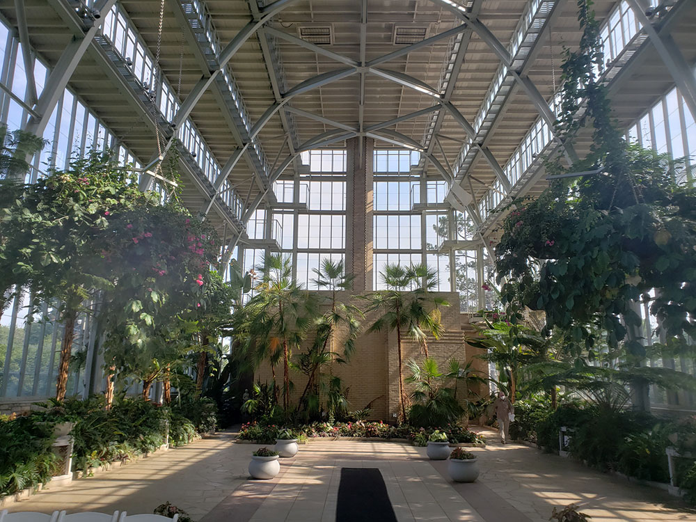
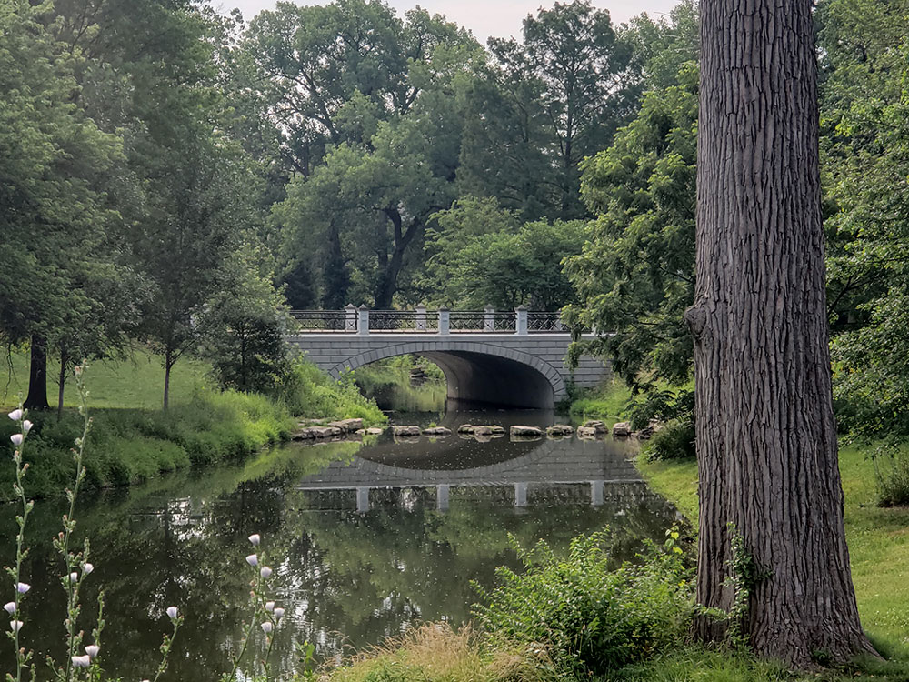
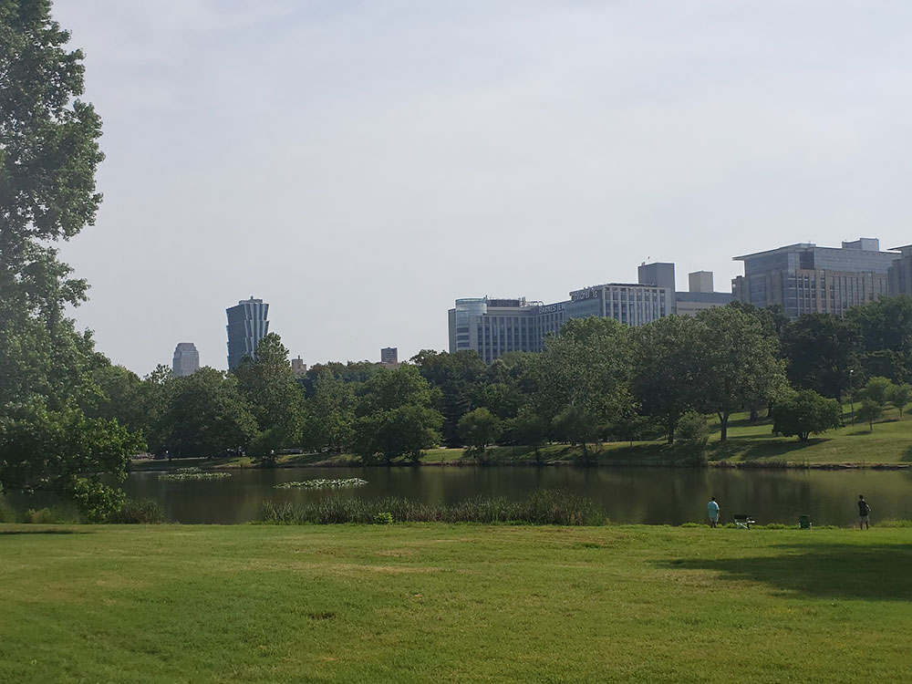
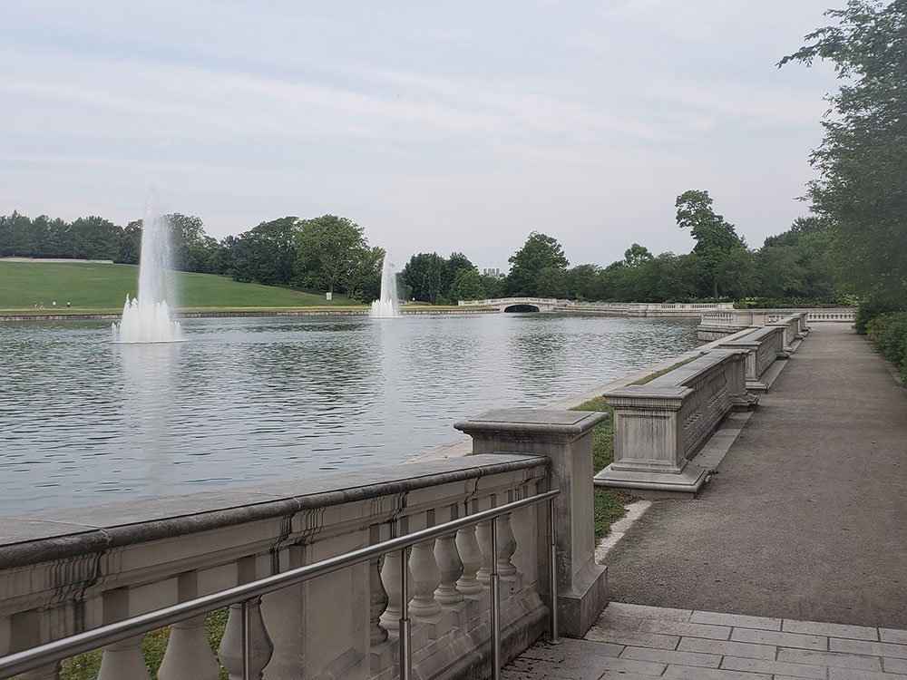
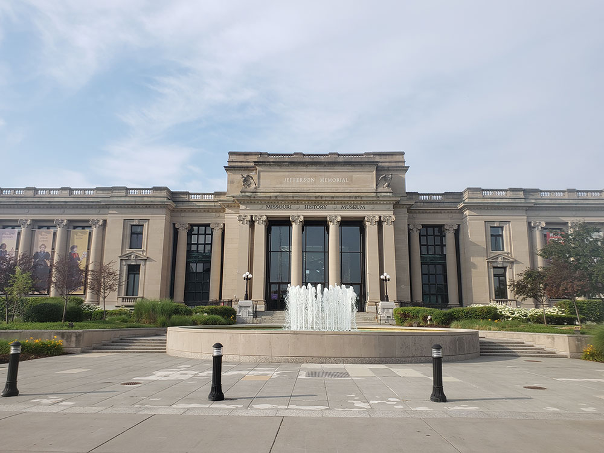
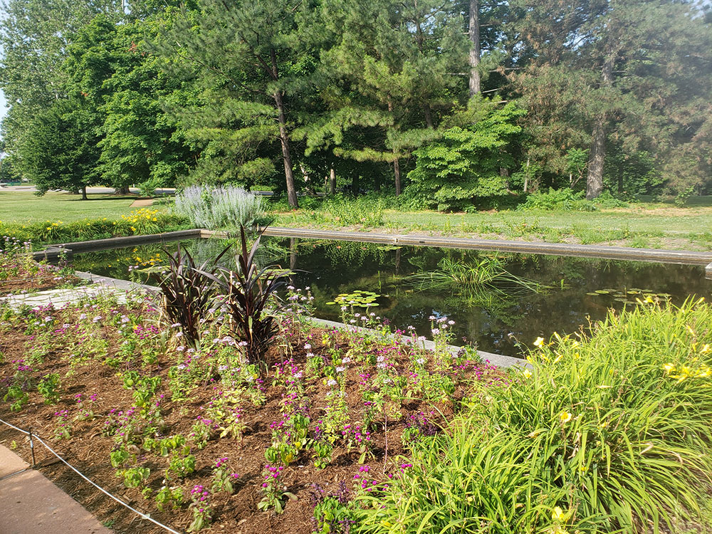
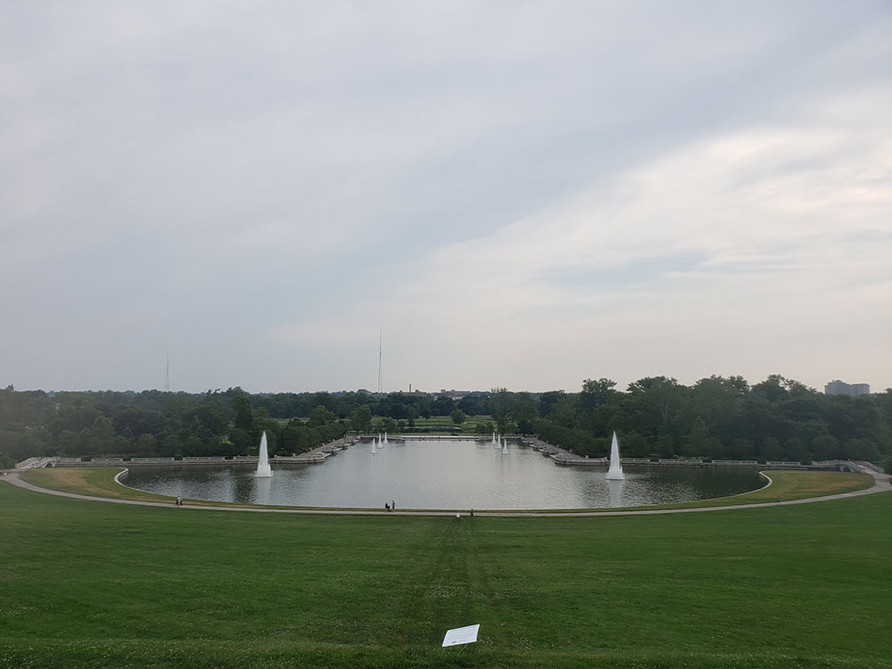
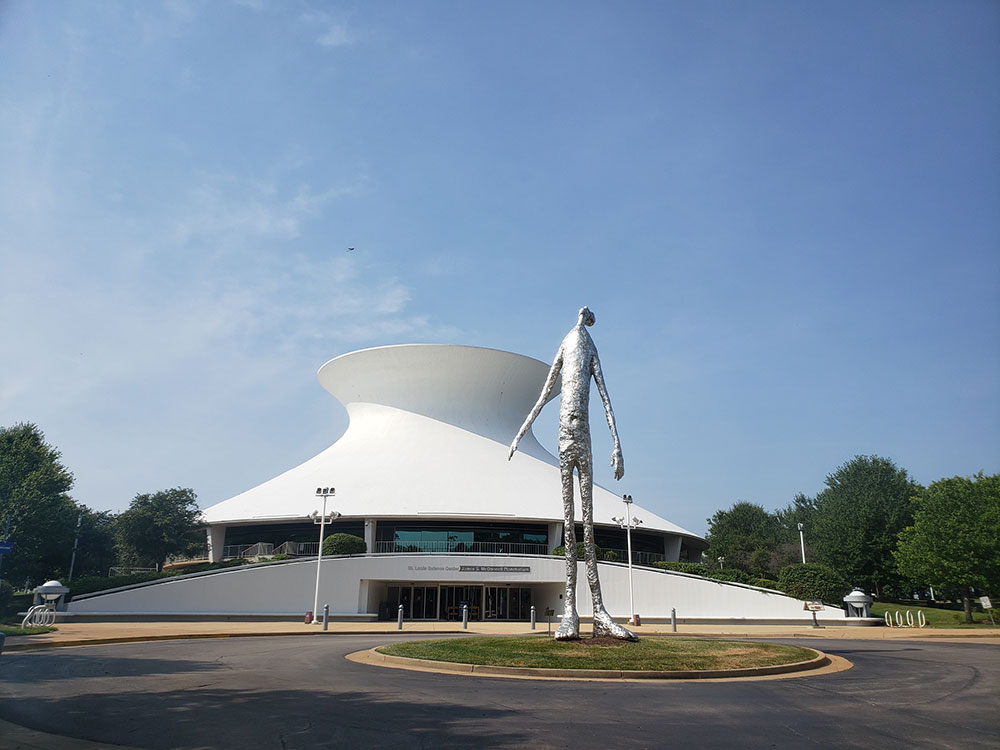
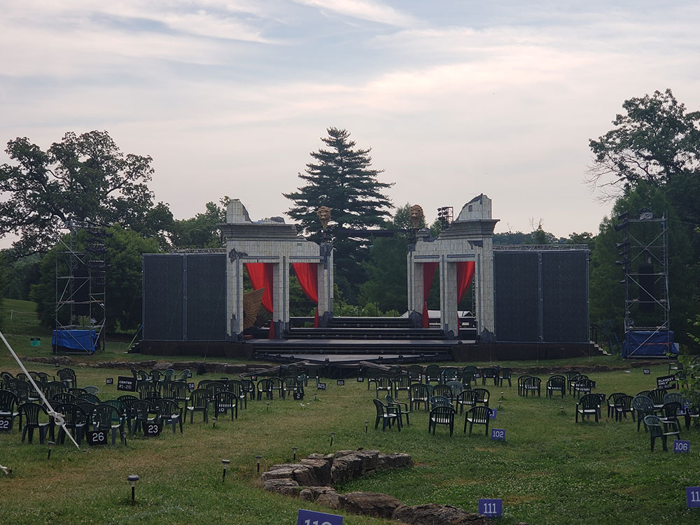
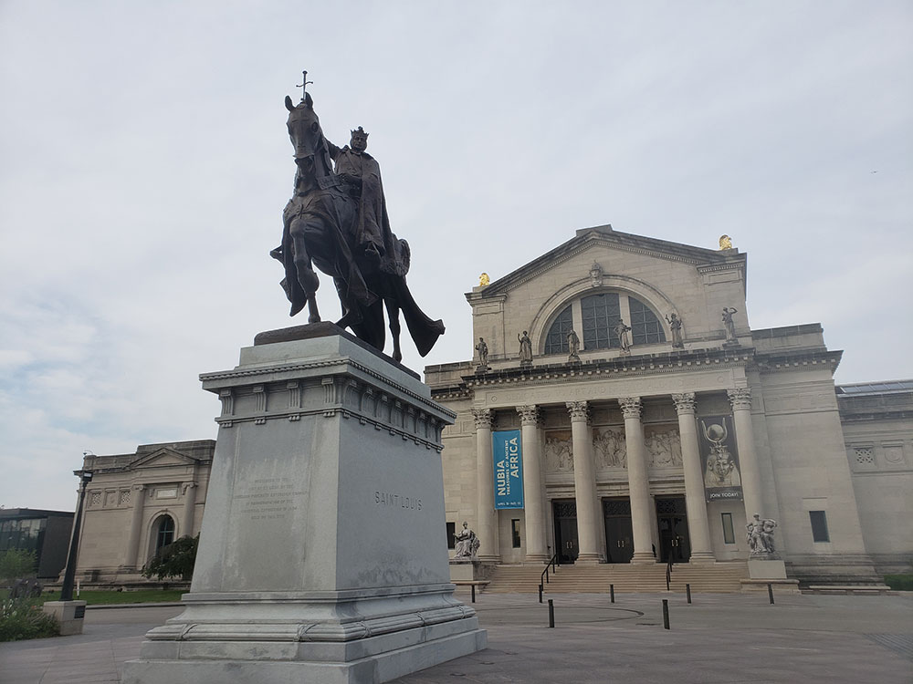
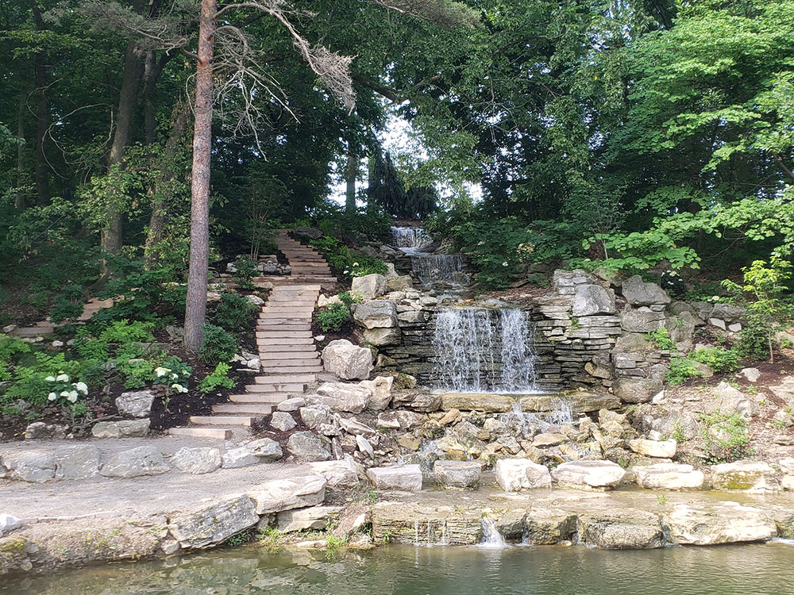